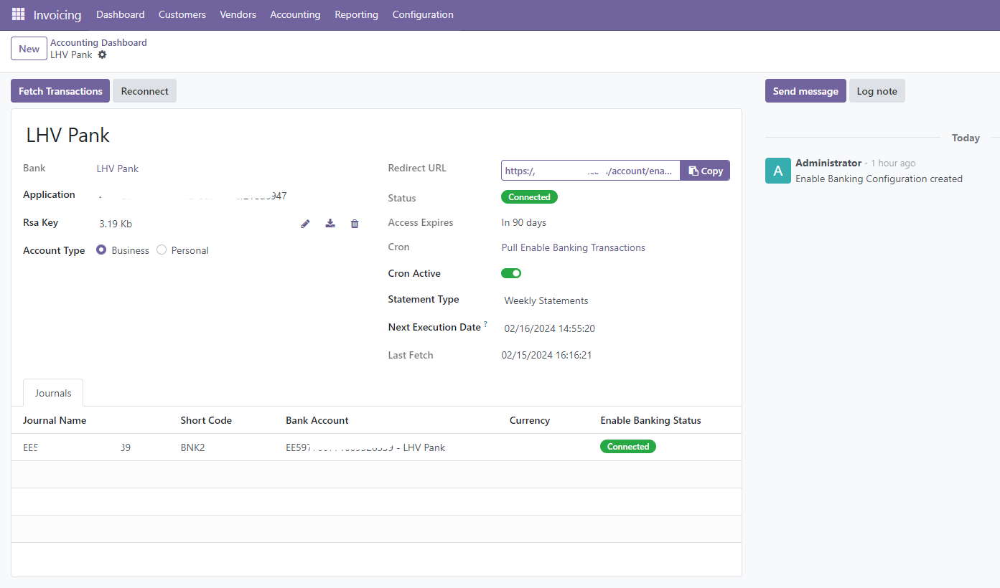
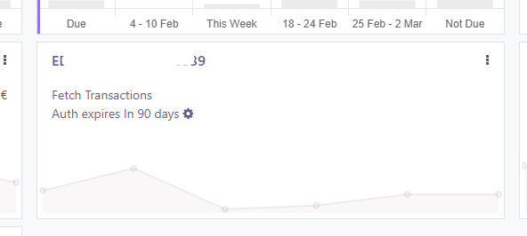
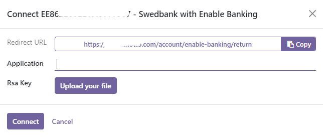

Automatically sync your bank statements with Enable Banking API connector. Enable Banking supports over 2500 banks in 28 countries in Europe.
If you link your own accounts on Enable Banking website, you can use their API FOR FREE.
See the full list of supported banks here: https://enablebanking.com/open-banking-apis

Fetch transactions manually, have a clear overview of your bank connection status and access the Enable Banking configuration right from the journal dashboard.
Just insert your Application ID and RSA Private Key, then click 'Connect' to effortlessly establish the connection. It's a quick and easy process, so you can get your bank sync running smoothly in no time.

Ensure you have pyjwt pip package installed before you install the module.